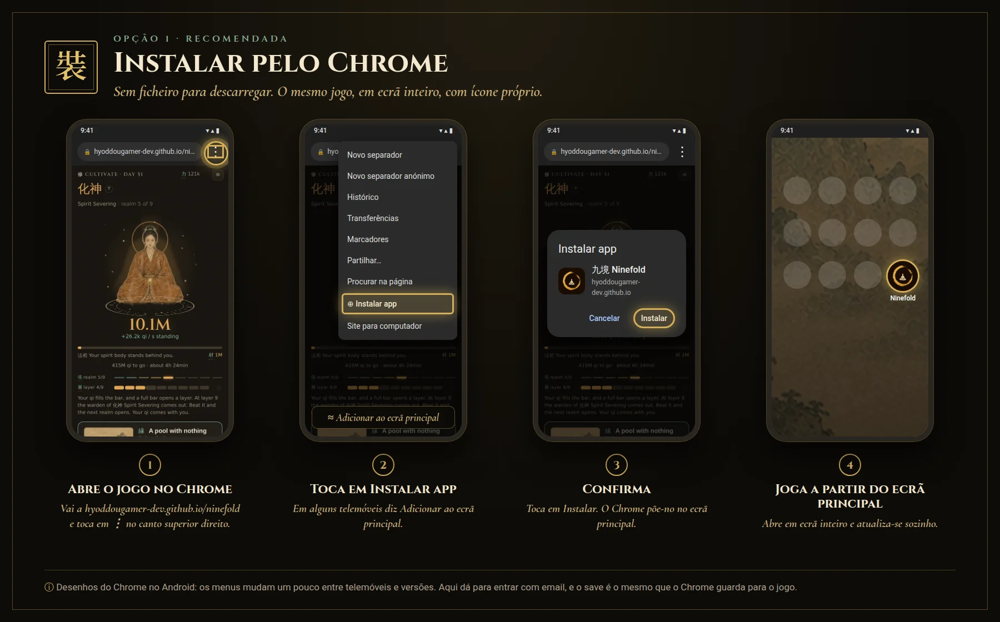
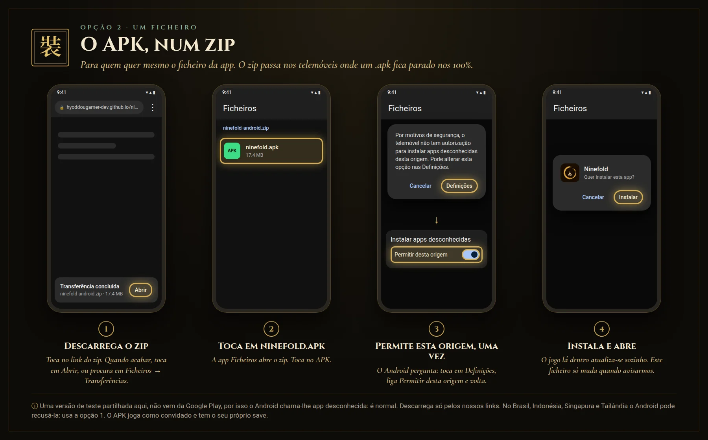

九境Testar o jogo
Um jogo idle de cultivo. O qi junta-se sozinho, mesmo com o telemóvel fechado.
Android · opção 1 · recomendada
Instalar pelo Chrome
Sem ficheiro para descarregar. É o mesmo jogo, em ecrã inteiro, com ícone próprio, e atualiza-se sozinho.
- Abre hyoddougamer-dev.github.io/ninefold no Chrome. Se abriu dentro do Discord ou de outra app, toca em ⋮ e em Abrir no Chrome.
- Toca em ⋮ no canto superior direito e em Instalar app. Em alguns telemóveis diz Adicionar ao ecrã principal.
- Toca em Instalar. O Ninefold aparece no ecrã principal.

Toca na imagem para a ver maior.
Android · opção 2 · um ficheiro
O APK, num zip
Para quem quer mesmo o ficheiro da app. O zip leva o mesmo APK e passa nos telemóveis onde um .apk fica parado nos 100%.
Descarregar o zip (17 MB)- Descarrega o zip no Chrome. Quando acabar, toca em Abrir, ou procura-o em Ficheiros → Transferências.
- Dentro do zip, toca em ninefold.apk.
- O Android pergunta uma vez: toca em Definições, liga Permitir desta origem e volta.
- Toca em Instalar e depois em Abrir.

Toca na imagem para a ver maior.
É seguro? É a nossa versão de teste, e o jogo lá dentro é o mesmo da opção 1. Não vem da Google Play, por isso o Android chama-lhe app desconhecida e pede para permitires a origem: é normal numa versão de teste. Depois de instalar, podes voltar a desligar Permitir desta origem. Descarrega-o só por esta página ou pelo nosso Discord.
O Android recusa instalar? Desde setembro de 2026, no Brasil, Indonésia, Singapura e Tailândia, o Android pode recusar apps de programadores ainda não registados na Google, e esta versão de teste ainda não está. Usa a opção 1, que não instala nenhum APK nosso.
O APK joga como convidado e o save fica nessa app, nesse telemóvel. O jogo lá dentro atualiza-se sozinho: só é preciso voltar aqui se te pedirmos.
iPhone
- Abre hyoddougamer-dev.github.io/ninefold no Safari.
- Carrega em Partilhar e depois em Adicionar ao ecrã principal.
Computador
Jogar no browser Jogar no itch.ioNo Chrome ou no Edge, o ícone Instalar na barra de endereço põe o jogo numa janela própria.
Discord
Entrar no DiscordOnde saem as builds novas, e onde se reportam bugs: um problema por post em 報-bugs.
O teu progresso
O progresso fica no aparelho e no browser onde jogas: o APK, o Chrome e o PC são jogos separados. O jogo instalado pelo Chrome (opção 1) usa o mesmo save que o Chrome.
No browser (PC, Chrome, Safari), abre o Menu → Rankings e entra com o teu email: recebes um link, e o mesmo cultivador abre em qualquer browser onde entrares. Também ficas nos rankings.
Na app Android, entra nos rankings como convidado. O link do email abre o browser e não a app, por isso na app não serve para entrar.
Sem conta, podes levá-lo à mão: Menu → Your save → Copy the save, e no outro lado Restore from a copy.
Privacidade: o que a conta guarda e como a apagar.